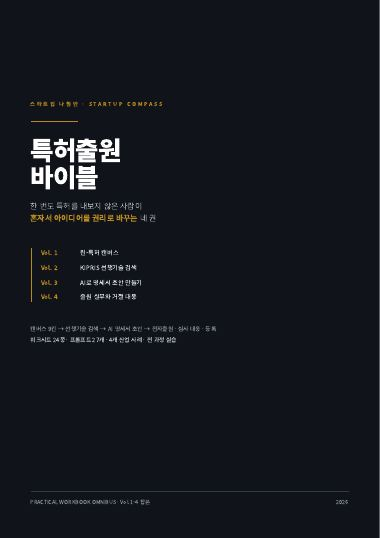
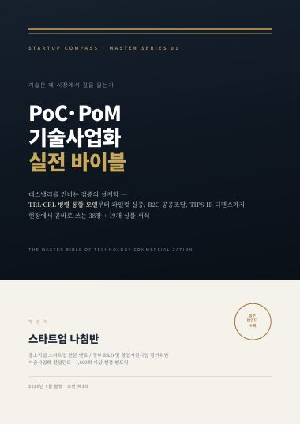
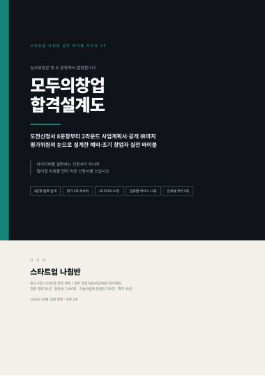
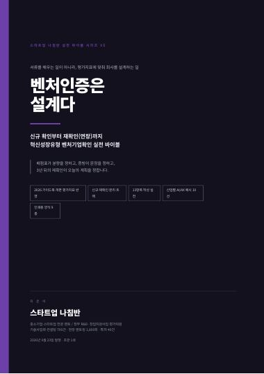
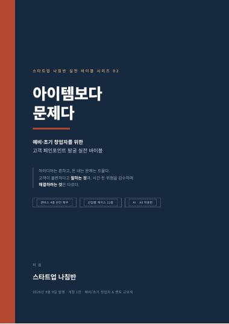
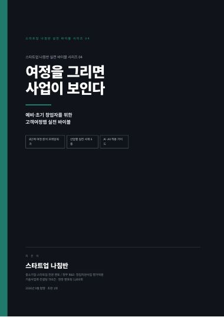
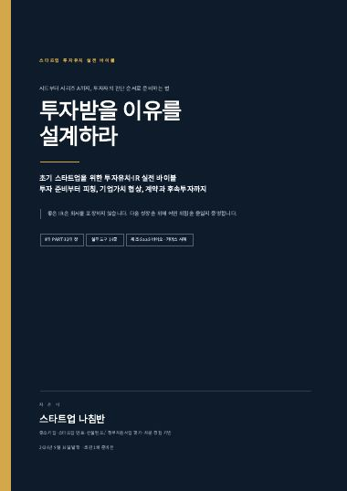
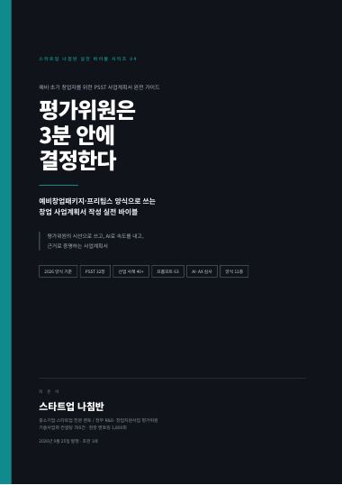

길을 잃은 스타트업에게
방향을 잡아드립니다
삼성전자·SAIT 연구원, 벤처기업 CEO, 그리고 평가위원까지. 만드는 쪽과 심사하는 쪽을 모두 경험한 30년 현장 노하우로, 사업계획서 한 장이 아닌 사업의 방향을 함께 설계합니다.
만들어 본 사람이, 심사해 본 사람이 말해드립니다
저는 연구소에서 기술을 만들었고, 벤처기업 CEO로 직접 회사를 운영했으며, 지금은 정부 지원사업 평가위원으로 수많은 사업계획서를 심사하고 있습니다.
그래서 창업가가 무엇에 막히는지, 평가위원이 어디를 보는지, 투자자가 무엇을 의심하는지를 세 가지 시선으로 동시에 볼 수 있습니다.
호서대학교 벤처대학원에서 정보경영 박사학위를 받았고, 청소년 창업교육 현장에서도 후배 창업가들을 만나고 있습니다. 유튜브와 콘텐츠 채널 스타트업 나침반을 통해 창업가와 중소기업에 필요한 실전 지식을 나누고 있습니다.
좋은 아이템보다 먼저 필요한 것은 좋은 방향입니다. 방향이 맞으면 속도는 따라옵니다.
— 스타트업 나침반전문분야
기술 개발부터 시장 진입, 정부 지원사업, 투자 유치까지 기업 운영 전반을 하나의 흐름으로 봅니다.
스마트팩토리 · IoT/ICT
제조 현장의 데이터 수집부터 설비 연계, 공정 개선까지. 제조업 특성에 맞는 현실적인 스마트화 로드맵을 설계합니다.
AI/AX 전환
기존 데이터 학습형 AI와 LLM을 아이템별로 구분 적용하고, 프롬프트 엔지니어링·RAG·파인튜닝으로 독자적 경쟁력을 만듭니다.
LLM 기반 창업
단순 API 연결을 넘어, 도메인 데이터와 워크플로우에 기반한 차별화된 AI 서비스 모델을 함께 구체화합니다.
특허 · IP 전략
아이디어를 권리로 바꾸는 특허 포트폴리오 설계. 선행기술 조사, 청구항 전략, 출원 실무까지 안내합니다.
정부 지원사업 내비게이션
기업 단계와 아이템에 맞는 사업을 고르고, 평가 기준에 맞춰 사업계획서와 발표를 준비하도록 돕습니다.
사업모델 · 성장전략
PMF 검증, 시장 진입 전략, 마케팅·재무·R&D 계획까지 종합적인 관점으로 성장 경로를 설계합니다.
평가위원이 실제로 보는 것
다양한 정부 창업·R&D 프로그램에서 평가위원으로 활동하며 쌓은 심사 관점을 준비 과정에 그대로 녹입니다.
자주 탈락하는 계획서의 공통점
- 문제 정의가 시장이 아닌 ‘기술 설명’ 중심
- 고객·시장 검증 근거 없이 TAM 숫자만 제시
- 차별성이 ‘AI 적용’ 한 줄로 끝나는 경우
- 자금 사용계획과 마일스톤이 따로 노는 구조
선정되는 계획서의 공통점
- 고객의 문제를 구체적 장면으로 설명
- 작은 검증 결과가 이미 있고 다음 단계가 명확
- 기술·데이터·IP로 만든 모방 장벽 제시
- 팀 역량과 사업 단계가 일관되게 연결
걸어온 길
연구 → 창업 → 교육 → 평가·자문으로 이어진 이력입니다.
삼성전자 · SAIT 선임/책임연구원
대기업 연구 조직에서 기술 개발과 사업화의 기본기를 다졌습니다.
벤처기업 대표이사(CEO)
기술 기반 벤처를 직접 경영하며 자금, 인력, 시장의 현실을 체득했습니다.
호서대학교 벤처대학원 정보경영 박사
현장 경험을 이론으로 정리하고, 벤처·정보경영 관점의 연구를 수행했습니다.
창업 멘토 · 컨설턴트 · 정부과제 평가위원
1,800회 이상의 멘토링과 700건 이상의 기술사업화 컨설팅, 40건 이상의 특허 경험을 바탕으로 활동 중입니다.
청소년 창업교육 아카데미 강의
차세대 창업가에게 문제 발견과 도전의 방법을 전하고 있습니다.
직접 집필한 실전 바이블 시리즈
현장에서 1,800회 넘게 멘토링하며 반복해서 마주친 질문들을, 창업가가 혼자서도 따라 할 수 있는 실전 가이드 전자책으로 정리했습니다.

특허출원 바이블
특허 경험이 없는 창업자를 위한 4권 시리즈

PoC·PoM 기술사업화 실전 바이블
TRL·CRL 병행 모델부터 B2G 공공조달, TIPS IR까지

모두의창업 합격설계도
8문항 사업계획서부터 2라운드 IR까지

벤처인증은 설계다
신규 확인부터 재확인(연장)까지 혁신성장유형 실전

아이템보다 문제다
고객 페인포인트 발굴 실전 바이블

여정을 그리면 사업이 보인다
고객 여정 지도로 사업을 설계하는 실전 바이블

투자받을 이유를 설계하라
초기 스타트업의 투자유치·IR 실전 바이블

평가위원은 3분 안에 결정한다
PSST 방식으로 쓰는 창업 사업계획서 가이드
전자책은 스타트업 나침반 멘토링과 강의 자료로 활용되고 있습니다. 자료 문의는 아래 문의하기로 연락 주세요.
멘토링을 ‘기록되는 자산’으로 만드는 방식
한 번의 상담으로 끝나지 않도록, 진단부터 콘텐츠 자산화까지 하나의 표준 흐름으로 운영합니다. 멘티와 기업 정보는 비공개 원칙에 따라 익명·통계 중심으로만 소개합니다.
진단
소크라테스식 질문으로 현재 단계와 막힌 지점을 특정합니다.
멘토링
해당 단계의 프레임워크와 평가 관점을 적용해 실행안을 만듭니다.
기록
세션 리포트와 다음 과제를 정리해 진행 이력을 남깁니다.
자산화
반복되는 질문은 전자책·블로그·영상 콘텐츠로 환원합니다.
멘토링 현장에서 바로 쓰는 스킬 실행 허브입니다. 창업 단계별 로드맵 9개 트랙, 즐겨찾기와 자주 쓰는 스킬, 세션 이력 기록, 프롬프트 복사 방식 실행까지 한 화면에서 이어집니다. 내부 도구로 운영하며 외부에는 요약만 공개합니다.
AI 스킬·에이전트로 컨설팅을 시스템화합니다
반복되는 컨설팅 업무를 개인 스킬과 자동화로 구조화했습니다. 단순히 AI를 연결하는 것이 아니라, 한국 정부지원·심사 맥락에 맞춘 프롬프트와 업무 흐름을 직접 설계해 운영합니다.
아이디어 발굴·구체화
막연한 아이디어를 검증 가능한 사업 가설로 구조화
고객·시장 검증
가설을 데이터와 고객 목소리로 입증 (CPF→PSF)
사업계획서·정부지원
검증 결과를 심사에 통과하는 문서로 전환
초기 사업화·MVP·IP
계획을 작동하는 제품과 보호 가능한 자산으로 전환
마케팅·고객 확보
첫 100명의 고객과 반복 가능한 획득 채널 확보
투자유치
트랙션을 투자 언어로 번역해 자금 조달
스케일업·AX 전환
반복 가능한 성장 시스템과 AI 운영 체계 구축
공통 인프라 트랙
문서·시각화·품질 게이트를 전 단계에 수평 적용
멘토 운영 트랙
평가·교육·콘텐츠 업무 전용 스킬 묶음
검증 → 지원사업 풀 파이프라인
아이디어 진단부터 정부지원사업 제출까지, 예창패·초창패 표준 흐름
투자유치 파이프라인
준비도 진단부터 투자자 타겟팅까지, 시드·시리즈A IR 표준 흐름
대외 문서 3단 공정
본문 작성 → AI 티 제거 → 문서 포맷 변환, 모든 제출 문서에 적용하는 품질 게이트
멘토링 1회차 표준
진단 → 멘토링 → 기록 → 콘텐츠 자산화까지 이어지는 세션 표준
주간 브리핑 자동화
매주 정해진 시간에 핵심 이슈와 실행 과제를 정리해 발행하는 개인 자문 시스템을 운영합니다.
콘텐츠 자동 생성·발행
스타트업·중소기업 대상 블로그 콘텐츠를 카테고리별로 생성하고 발행하는 스킬을 구축했습니다.
스킬 오케스트레이션
진단·작성·검수·변환 스킬을 순서대로 연결해, 한 번의 요청으로 문서 완성까지 이어지게 설계합니다.
이렇게 진행합니다
조언으로 끝나지 않고, 바로 실행할 수 있는 결과물로 마무리합니다.
현황 진단
아이템, 팀, 단계, 목표를 짧고 정확하게 파악합니다.
핵심 쟁점 도출
지금 가장 먼저 풀어야 할 한두 가지에 집중합니다.
실행안 설계
검증 실험, 지원사업 매칭, 기술·IP·AI 적용 방안을 구체화합니다.
결과물 · 후속
정리된 리포트와 체크리스트를 드리고, 진행 상황을 함께 점검합니다.
유튜브 채널 AX_Best
창업가와 중소기업을 위한 AI/AX 실전 지식을 영상으로 나눕니다. AI/AX 활용, 정부 지원사업, 특허, 사업계획서 작성 노하우를 만나보세요.
나침반 노트
현장에서 만난 질문과 생각, 멘토링 일기를 짧게 기록합니다.
자주 묻는 질문
처음 문의하시는 분들이 가장 많이 물으시는 내용입니다.
예비창업자도 상담할 수 있나요?
그럼요. 아이디어 단계에서 문제 정의와 고객 검증 방법을 잡는 것이 가장 효과가 큽니다. 예비창업패키지 준비도 함께 도와드립니다.
제조업 중소기업도 AI/AX 컨설팅이 가능한가요?
가능합니다. 공정·설비 데이터에 맞는 AI 적용 범위를 먼저 정하고, 필요한 경우 공급기업 매칭과 지원사업 연계까지 설계합니다.
사업계획서를 대신 써주시나요?
대필이 아니라 코칭입니다. 평가 관점에서 논리 구조와 근거를 점검하고, 대표님이 직접 설명할 수 있는 계획서가 되도록 돕습니다.
어떤 방식으로 진행되나요?
대면 또는 화상으로 진행하며, 사전 자료를 보내주시면 시간을 훨씬 효율적으로 쓸 수 있습니다.